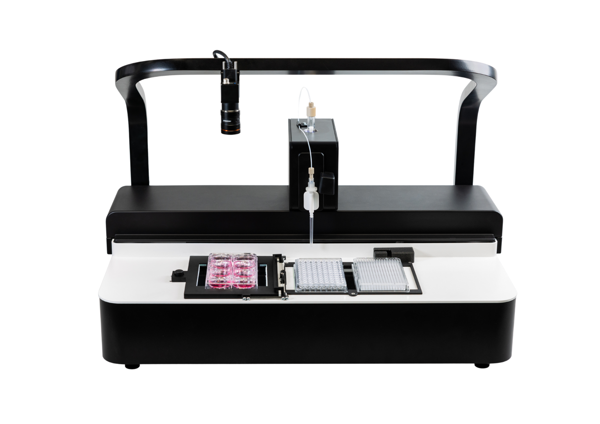
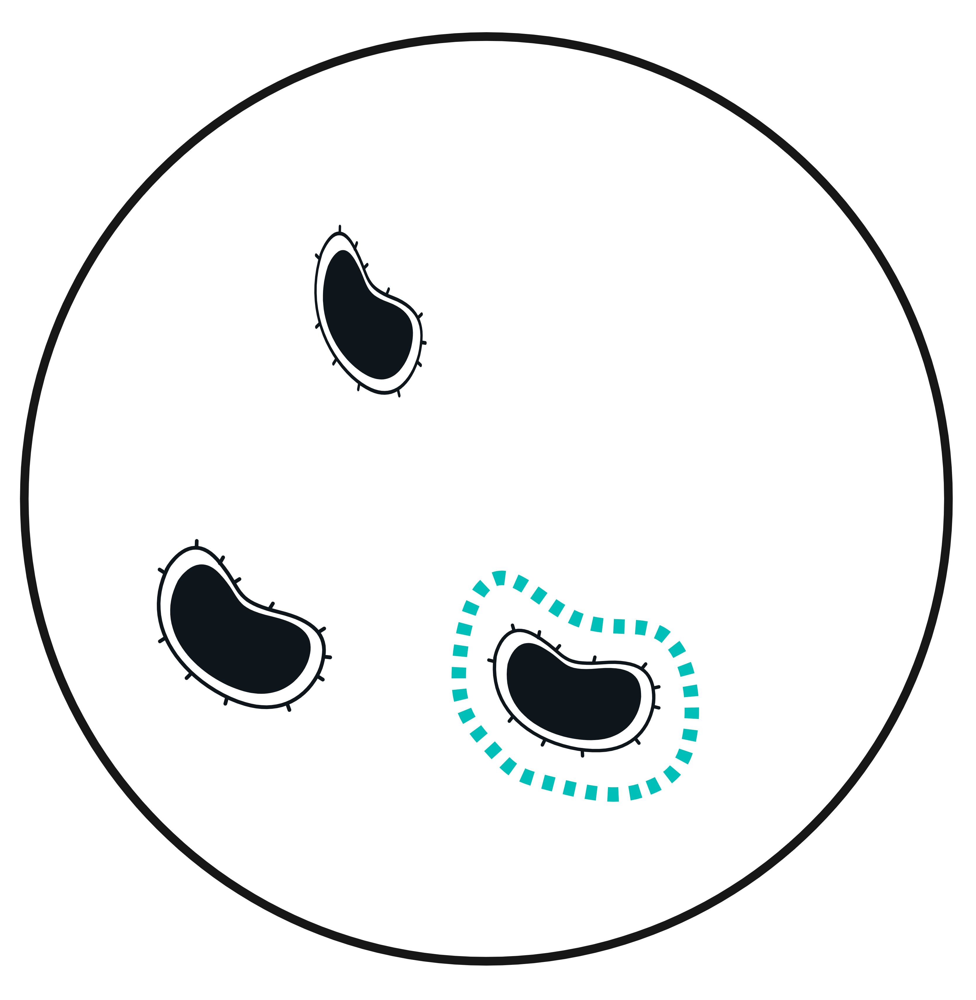
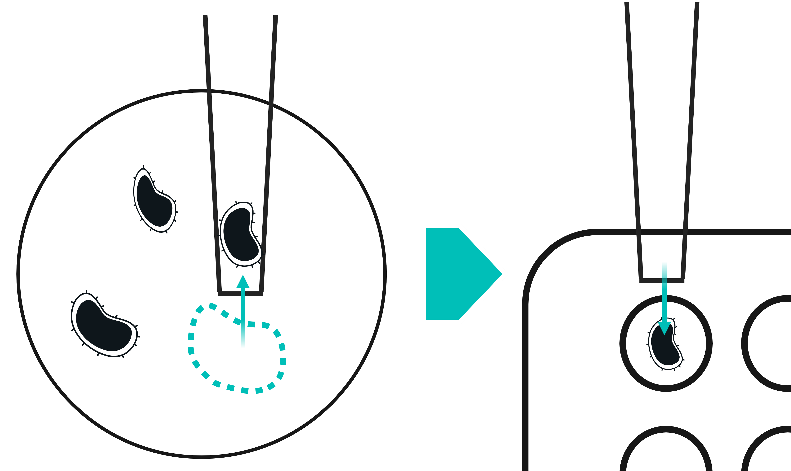
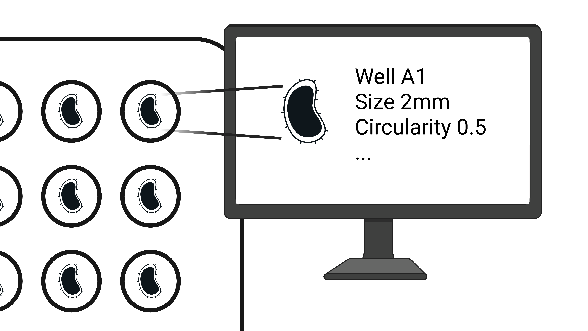

The Orgadroid features
Organoid agnostic
- Size range from 25µm to 5mm.
- 100% organoid integrity preserved thanks to our unique patented pipet tip which comes in all size ranges.

Traceability & QC
- Bright field imaging
- Deep learning for morphology & complex features extraction
- Real time monitoring
- Batch analysis reports
Plug & Play integration
- Compact footprint: 51 x 71 x 41 cm (HxWxD)
- Weight: 18 kg
- API-ready for robotic stations
- Standard plates compatibility
- Robotic arm compatibility
Preserved sterility
- Flow hood compatibility
- Disposable sterile tips
- Autoclavable components
Friendly UI
- The user may select labware, number of tissues and morphology criteria
Workflow example

AI-based localization & Morphological selection
Automated detection within the culture plate. Quantitative assessment to classify organoids as suitable or unsuitable.
→

Pick and place
If the organoid is selected, it is transferred. Otherwise the system moves to the next organoid.
→

Traceability and reporting
Automated organoid characterization documentation